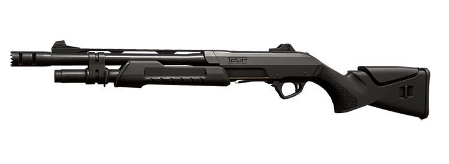

Armas
Atualmente, VALORANT conta com 18 armas diferentes, incluindo a faca. Com exceção da melee, todos os jogadores podem comprar qualquer um dos armamentos disponíveis no menu independente do lado que estiver jogando.
Vale lembrar que cada armamento possui um preço diferente. Armas que dão mais dano aos adversários ou que contam com uma cadência maior de tiros por segundo acabam custando mais caro.
Categorias de armas do VALORANT
- Pistolas: Classic, Ghost, Frenzy, Shorty e Sheriff.
- Submetralhadoras: Stinger e Spectre;
- Rifles: Vandal, Phantom, Bulldog, Guardian, Marshall e Operator;
- Armas pesadas: Bucky, Judge, Ares e Odin;
Pistolas - as armas básicas do VALORANT
As pistolas provavelmente são as primeiras armas do VALORANT que um novo jogador entrará em contato. As secundárias são muito importantes no 1° e 13° rounds da partida, quando apenas pistolas podem ser utilizadas. A vitória nessas rodadas pode influenciar a economia dos times e a partida no geral.
Pistolas também são muito importantes em rodadas econômicas. Apesar de serem relativamente baratas em relação aos outros armamentos do jogo, elas podem ser extremamente letais dependendo da habilidade do jogador.
(Voltar)
Classic

- Cadência de tiro: 6.75 balas/seg
- Velocidade de corrida: 5.7375 m/seg
- Velocidade ao equipar: 0.75 seg
- Velocidade ao recarregar: 1.75 seg
- Carregador: 12 balas
- Dano: 18.7 - 78.0
- Preço: 0
(Voltar)
Ghost

- Cadência de tiro: 6.75 balas/seg
- Velocidade de corrida: 5.7375 m/seg
- Velocidade ao equipar: 0.75 seg
- Velocidade ao recarregar: 1.5 seg
- Carregador: 15 balas
- Dano: 21.25 - 105.0
- Preço: 500
(Voltar)
Frenzy
- Cadência de tiro: 10 balas/seg
- Velocidade de corrida: 5.7375 m/seg
- Velocidade ao equipar: 1 seg
- Velocidade ao recarregar: 1.5 seg
- Carregador: 13 balas
- Dano: 17.85 - 78.0
- Preço: 450
(Voltar)
Shorty

- Cadência de tiro: 3.33 balas/seg
- Velocidade de corrida: 5.4 m/seg
- Velocidade ao equipar: 0.75 seg
- Velocidade ao recarregar: 1.75 seg
- Carregador: 2 balas
- Dano: 2.55 - 24
- Preço: 150
(Voltar)
Sheriff

- Cadência de tiro: 4 balas/seg
- Velocidade de corrida: 5.4 m/seg
- Velocidade ao equipar: 1 seg
- Velocidade ao recarregar: 2.25 seg
- Carregador: 6 balas
- Dano: 42.5 - 159.5
- Preço: 800
(Voltar)
Submetralhadoras - armas baratas, mas sem muito dano
As submetralhadoras são as armas automáticas mais baratas do VALORANT e geralmente são compradas nas rodadas logo após o pistol ou em situações econômicas. A alta cadência de tiros desse tipo de arma é balanceado com um dano abaixo da média.
(Voltar)
Stinger
- Cadência de tiro: 16 balas/seg
- Velocidade de corrida: 5.7375 m/seg
- Velocidade ao equipar: 0.75 seg
- Velocidade ao recarregar: 2.25 seg
- Carregador: 20 balas
- Dano: 21.25 - 67.5
- Preço: 950
(Voltar)
Spectre

- Cadência de tiro: 13.33 balas/seg
- Velocidade de corrida: 5.7375 m/seg
- Velocidade ao equipar: 0.75 seg
- Velocidade ao recarregar: 2.25 seg
- Carregador: 30 balas
- Dano: 18.7 - 78.0
- Preço: 1.600
(Voltar)
Rifles - as armas mais cobiçadas do VALORANT
Os rifles são as armas do VALORANT mais comuns. A Vandal e a Phantom são os armamentos mais populares do jogo e estão presentes em quase todas as rodadas armadas. Além da dupla, a Operator, arma mais poderosa do jogo, também se encaixa nessa categoria.
(Voltar)
Vandal

- Cadência de tiro: 9.75 balas/seg
- Velocidade de corrida: 5.4 m/seg
- Velocidade ao equipar: 1 seg
- Velocidade ao recarregar: 2.5 seg
- Carregador: 25 balas
- Dano: 34 - 160
- Preço: 2.900
(Voltar)
Phantom

- Cadência de tiro: 11 balas/seg
- Velocidade de corrida: 5.4 m/seg
- Velocidade ao equipar: 1 seg
- Velocidade ao recarregar: 2.5 seg
- Carregador: 30 balas
- Dano: 26,35 - 156
- Preço: 2.900
(Voltar)
Bulldog

- Cadência de tiro: 10 balas/seg
- Velocidade de corrida: 5.4 m/seg
- Velocidade ao equipar: 1 seg
- Velocidade ao recarregar: 2.5 seg
- Carregador: 24 balas
- Dano: 29,75 - 115.5
- Preço: 2.050
(Voltar)
Guardian

- Cadência de tiro: 5.25 balas/seg
- Velocidade de corrida: 5.4 m/seg
- Velocidade ao equipar: 1 seg
- Velocidade ao recarregar: 2.5 seg
- Carregador: 12 balas
- Dano: 48,75 - 195
- Preço: 2.250
(Voltar)
Marshal

- Cadência de tiro: 1.5 balas/seg
- Velocidade de corrida: 5.4 m/seg
- Velocidade ao equipar: 1.25 seg
- Velocidade ao recarregar: 2.5 seg
- Carregador: 5 balas
- Dano: 85.85 - 202
- Preço: 950
(Voltar)
Operator
- Cadência de tiro: 0.6 balas/seg
- Velocidade de corrida: 5.13 m/seg
- Velocidade ao equipar: 1.5 seg
- Velocidade ao recarregar: 3.7 seg
- Carregador: 5 balas
- Dano: 120 - 255
- Preço: 4.700
(Voltar)
Armas pesadas - para eliminar rápidamente os adversários
As armas pesadas do VALORANT são muitas vezes utilizadas em situações econômicas. Tanto as escopetas como a Judge e as LMGs como a Ares possuem um valor baixo e muitas vezes são compradas em rounds bônus ou econômicos.
(Voltar)
Bucky

- Cadência de tiro: 1.1 balas/seg
- Velocidade de corrida: 5.0625 m/seg
- Velocidade ao equipar: 1 seg
- Velocidade ao recarregar: 2.5 seg
- Carregador: 5 balas
- Dano: 7.65 - 40
- Preço: 850
(Voltar)
Judge

- Cadência de tiro: 3.5 balas/seg
- Velocidade de corrida: .0625 m/seg
- Velocidade ao equipar: 1 seg
- Velocidade ao recarregar: 2.2 seg
- Carregador: 7 balas
- Dano: 5.95 - 44
- Preço: 1.850
(Voltar)
Ares
- Cadência de tiro: 13 balas/seg
- Velocidade de corrida: 5.13 m/seg
- Velocidade ao equipar: 1.25 seg
- Velocidade ao recarregar: 3.25 seg
- Carregador: 50 balas
- Dano: 23.8 - 72
- Preço: 1.600
(Voltar)
Odin

- Cadência de tiro: 12 balas/seg
- Velocidade de corrida: 5.13 m/seg
- Velocidade ao equipar: 1.25 seg
- Velocidade ao recarregar: 5 seg
- Carregador: 100 balas
- Dano: 26,35 - 95
- Preço: 3.200
(Voltar)
Referências
MAISESPORTES